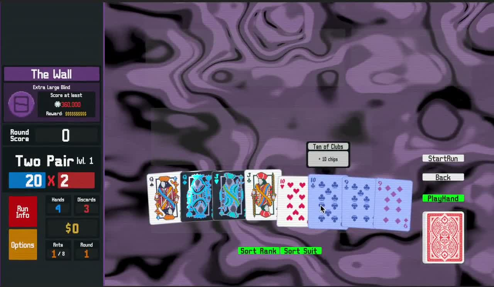

Games with depth
Small rules that combine into interesting choices. Combat systems, card games, and the feel of an interaction.
C# / UNITYHELLO, WORLD. / THIS IS MY CORNER OF THE WIRED.
Game developer & software engineer
I make games, build software, and follow the questions that live somewhere between the two.
01 / THE PERSON BEHIND THE SCREEN
I’m studying Game Design, Development & Innovation at Duke University, with a computer science background from NYU and minors in Game Design and Japanese.
I’m drawn to the systems beneath an experience: how a card effect unfolds, how an agent makes a decision, and how a small interaction becomes satisfying to use.
My work moves between game development, AI, and web applications. I like taking an idea apart, understanding its rules, and putting it back together as something you can play with or use.
Small rules that combine into interesting choices. Combat systems, card games, and the feel of an interaction.
C# / UNITYHow an agent sees a problem, chooses an action, and improves through experience.
PYTHON / AI / ALGORITHMSInterfaces and the machinery behind them—from a useful local tool to a full-stack platform.
JAVASCRIPT / REACT / EXPRESS02 / A FEW THINGS I’VE MADE

01 / Game development
A deckbuilding combat project built around composable actions, event hooks, and data-driven rules.
Read case study
02 / Full-stack development
A platform connecting game discovery, publishing workflows, and developer communities.
Read case study
03 / Game development
A Unity study in poker-hand evaluation, staged scoring, and responsive card presentation.
Explore projectThere’s a person on the other side of the screen.
Say hello.